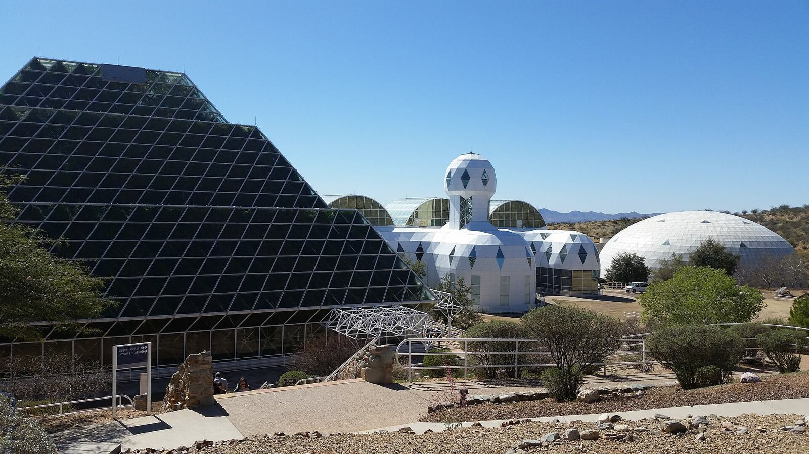

Eight people sealed themselves inside a glass world, and its air ran short of oxygen.
In 1991, a crew of eight moved into a sealed building in the Arizona desert. Everything they ate and breathed had to come from inside. Within 16 months, the oxygen in the air had dropped by a third. This page uses the records to find out why.

Sealed in
Biosphere 2 is a glass building near Oracle, in southern Arizona. It covers 3.15 acres, or about 1.3 hectares. A liner under the floor and the glass roof kept air from getting in or out.
Inside, its builders made small copies of a rainforest, a savanna, a desert, a marsh and a coral reef. They also built a farm. On 26 September 1991, four women and four men walked in and the doors were sealed. The plan was to stay for two years.
Biosphere 2 was meant to be a closed system. Sunlight could enter, but no food, air or water could. Every atom the crew needed had to be recycled inside.
Two facts about the building matter for this lesson. The glass let through only about 45% of the sunlight outside. And the soil was rich in dead plant matter: a mix of 70% clay soil, 15% compost and 15% peat.
Source for this lesson's oxygen and soil data: Severinghaus and others, 1994, "Oxygen loss in Biosphere 2", Eos 75: 33 to 37.
The oxygen record
Normal air is 20.9% oxygen. The crew's instruments measured the oxygen in Biosphere 2 again and again. Table 1 shows five points from that record.
| Days after sealing | About when | Oxygen in the air (%) |
|---|---|---|
| 0 | September 1991 | 20.9 |
| About 210 | April 1992 | 17.3 |
| About 280 | July 1992 | 16.7 |
| About 370 | October 1992 | 16.0 |
| About 475 | January 1993 | 14.0 |
Values read from Figure 1 of Severinghaus and others, 1994. The figure shows the oxygen fall from 21% to 14% over the first 16 months.
To find a rate, divide the change by the time it took. Here, a "point" means one percentage point of oxygen.
Air with 14% oxygen is like the thin air high on a mountain. The scientists reported that it caused health problems for the crew. In January 1993, the managers pumped in pure oxygen to keep them safe.
Where did the oxygen go?
In a closed system, matter cannot leave. So the missing oxygen must still be inside, in some new form. The scientists' first idea was the soil.
Soil is full of microbes, such as bacteria and fungi. They feed on dead plant matter, and they use oxygen to do it. This is cellular respiration, the same process that runs in your own cells:
For each oxygen molecule the microbes use, they make about one carbon dioxide (CO₂) molecule.
Here is what the scientists found when they added up the carbon dioxide.
- CO₂ in the air rose by less than half a point.
- A machine called a scrubber had pulled out more CO₂, worth about 1.5 points.
- Together, that is only about 2 points of CO₂, against 7 to 8 points of oxygen lost.
The paper's full budget puts the oxygen loss at about 8 points. It counts the air the crew let in and out during the two years.
So most of the carbon was missing too. The scientists looked for something inside that could trap CO₂. They found it in the building itself.
Concrete contains a chemical that reacts with CO₂ and turns it into calcium carbonate, the mineral in limestone. Inside Biosphere 2, CO₂ was 2,000 to 4,000 parts per million. Outside, it was about 350. The scientists drilled cores from concrete walls poured at the same time, inside and outside.
Now the matter can be tracked. Microbes used oxygen to break down carbon in the soil. They released it as CO₂, and the concrete locked most of that CO₂ away as calcium carbonate. Carbon locked in a wall can no longer cycle back to the plants.
EnrichmentA carbon fingerprint
Extra depth. The rest of the lesson works without it.
Carbon comes in a light form and a heavy form. Different materials hold slightly different mixes of the two, like a fingerprint.
New plant growth in Biosphere 2 held less heavy carbon than the soil it came from. So something else must have taken in extra heavy carbon. The new calcium carbonate in the concrete was rich in heavy carbon, so it matched the missing piece.
Many students think the concrete soaked up the oxygen. The oxygen was used up by microbes in the soil. The concrete took in the carbon dioxide that the microbes released.
Not enough food
The oxygen record also tells an energy story. In photosynthesis, plants use light energy to turn CO₂ and water into sugar. That releases oxygen. Respiration does the reverse.
If photosynthesis had kept pace with respiration, the oxygen would have stayed level. Instead, respiration ran at roughly twice the rate of photosynthesis.
Think back to the energy pyramid from Lesson 2b-4. Every level depends on the energy the producers capture. In Biosphere 2, the glass blocked more than half the sunlight, so the crops captured less energy.
The crew sat at the top of a short food chain. They grew all their own food on a small farm inside the building.
| Measure | Value |
|---|---|
| Food energy eaten each day | 1,750 to 2,100 kcal |
| Average weight lost | 17% of body weight |
| When most weight was lost | first 8 months |
Source: Walford and others, 2002, Journal of Gerontology: Biological Sciences 57: B211 to B224.
Matter cycles and energy flows. In Biosphere 2, carbon got locked in concrete and too little light reached the plants. So the system ran short of both oxygen and food.
Argue from the data
Use numbers from Table 1, from Section 03 and from Table 2. A strong answer uses both the matter story and the energy story.
Prompt: Biosphere 2 could not support its crew for two years without outside help. Use data on matter and energy to explain why.
- Oxygen data (1 mark): You use Table 1 to show the fall, such as 20.9% to 14.0% in about 475 days.
- Where the matter went (1 mark): You say soil microbes used the oxygen and released CO₂.
- You say the air gained only about 2 points of CO₂, and the concrete took up the rest.
- Energy (1 mark): You explain that the glass let in under half the sunlight, so plants captured less energy.
- Food data (1 mark): You link less plant energy to the crew losing 17% of their body weight.
Biosphere 2 failed in ways its builders did not predict. Which part of your Version 1.0 rests on a guess? Write one measurement in your project journal that would show whether it works.